폐기물처리산업기사 (2007-09-02 기출문제)
1과목: 폐기물개론
1. 500세대, 세대당 평균가족수 4인인 아파트에서 배출하는 쓰레기를 2일마다 수거하는데 적재용량 8m3의 트럭 5대가 소요된다. 쓰레기 단위 용적당 중량이 0.14g/cm3 이라면 1인 1일당 쓰레기 배출량은?
- 0.8kg/인ㆍ일
- 1.0kg/인ㆍ일
- 1.2kg/인ㆍ일
- 1.4kg/인ㆍ일
(정답률: 알수없음)

2. 물렁거리는 가벼운 물질로부터 딱딱한 물질을 선별하는데 사용되는 것으로 경사진 Conveyor를 통해 폐기물을 주입시켜 천천히 회전하는 드럼위에 떨어뜨려서 분류하는 선별장치는?
- Stoners
- Ballistic Separator
- Fluidized Bed Separators
- Secators
(정답률: 알수없음)
3. 80ton hr 규모의 시설에서 평균크기가 30.5cm 인 혼합된 도시폐기물을 최종크기 5.1cm로 파쇄하기 위한 동력은? (단, 킥의 법칙 적용, C=13.6 kWㆍhr/ton)
- 약 1950kW
- 약 2950kW
- 약 3950kW
- 약 4950kW
(정답률: 알수없음)
4. 폐기물의 초기함수율이 65%이었다. 이 폐기물을 노천건조 시킨 후의 함수율이 45% 감소되었다면 몇 kg의 물이 증발되었는가? (단, 초기 폐기물의 무게 : 100kg 이고 폐기물의 비중 : 1)
- 약 31.2kg
- 약 32.2kg
- 약 34.5kg
- 약 36.4kg
(정답률: 알수없음)
5. 인구 1000000인 도시에서 1인 1인당 1.8kg의 쓰레기가 발생하고 있다. 1년 동안에 발생한 쓰레기의 총 부피는? (단, 쓰레기 밀도는 0.45kg/L이며 인구 및 발생량 증가 압축에 의한 변화는 무시한다.)
- 260000m3/년
- 146000m3/년
- 163000m3/년
- 82000m3/년
(정답률: 알수없음)
6. 다음 중 LCA(Life Cycle Assessment)의 구성요소가 아닌 것은?
- 목적 및 범위의 설정
- 목록분석
- 수행평가
- 영향평가
(정답률: 알수없음)
7. 폐기물의 성상분석의 절차 중 가장 먼저 시행하는 것은?
- 함수율측정
- 밀도측정
- 원소분석측정
- 발열량측정
(정답률: 알수없음)
8. 쓰레기를 압축시켜 용적감소율이 33%인 경우 압축비는?
- 1.29
- 1.31
- 1.49
- 1.57
(정답률: 알수없음)
9. 폐기물 파쇄시 적용하는 힘과 가장 거리가 먼 것은?
- 충격력
- 압축력
- 인장력
- 전단력
(정답률: 알수없음)
10. 쓰레기 발생량 조사방법 중 물질수지법에 관한 설명으로 틀린 것은?
- 시스템에 유입되는 대표적 물질을 설정하여 발생량을 추산하여야 한다.
- 주로 산업폐기물의 발생량 추산에 이용된다.
- 물질수지를 세울 수 있는 상세한 데이터가 있는 경우에 가능하다.
- 우선적으로 조사하고자 하는 계의 경계를 정확하게 설정하여야 한다.
(정답률: 알수없음)
11. 쓰레기 발생을 감량화하기 위한 대책으로는 발생원 대책과 발생 후 대책으로 크게 구분한다. 다음의 감량화 방법 중 특성이 다른 사항과 상이한 것은?
- 식단제 개선
- 분리수거 실시
- 가정용품의 적절한 정비
- 재생 이용
(정답률: 알수없음)
12. 폐기물 발생량에 영향을 미치는 인자들에 대한 설명으로 맞는 것은?
- 대도시보다는 문화수준이 열악한 중소도시의 주민이 쓰레기를 더 많이 발생시킨다.
- 쓰레기 발생량은 주방쓰레기량에 영향을 많이 받으므로, 엥겔지수가 높은 서민층의 쓰레기가 부유층보다 많다.
- 쓰레기를 자주 수거해가면 쓰레기발생량이 증가한다.
- 쓰레기통이 클수록 유효용적이 증가하여 발생량이 감소한다.
(정답률: 알수없음)
13. 쓰레기 압축처리 방법 중 포장기(baler) 대한 설명으로 적합지 않는 사항은?
- 압축 후 삼베나 가죽 또는 철끈으로 묶는다.
- 관리에 용이한 크기나 무게로 포장한다.
- 완전하게 건조되지 못한 폐기물은 취급하기 곤란하다.
- 매립지에서는 포장을 헤체하여 최종처분한다.
(정답률: 알수없음)
14. 수거노선을 설정할 때 유의할 사항 중 잘못된 것은?
- 지형지물 및 도로 경계와 같은 장벽을 피하여 간선도로 부근에서 시작하고 끝나도록 한다.
- 가능한 한 시계방향으로 수거 노선을 정한다.
- 발생량이 아주 많은 발생원은 하루 중 가장 먼저 수거한다.
- 발생량이 적으나 수거빈도가 동일하기를 원하는 적재지점은 가능한 한 같은 날 왕복내에서 수거한다.
(정답률: 알수없음)
15. 삼성분이 다음과 같은 쓰레기의 저위발열량(kcal/kg)은?
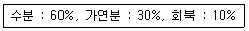
- 약 890
- 990
- 1190
- 1290
(정답률: 알수없음)
16. 다음 중 적환장이 설치되는 경우로 틀린 것은?
- 폐기물 수집장소와 처분장소가 멀리 떨어져 있는 경우
- 대용량의 수집차량이 사용되는 경우
- 상업지역에서 폐기물 수집에 소형용기를 사용하는 경우
- 불법투기와 다량의 어지러진 쓰레기들이 발생하는 경우
(정답률: 알수없음)
17. 하나의 수식으로 각 먼지들의 효과를 총괄적으로 나타내어 복잡한 시스템의 분석에 유용하게 사용할 수 있는 쓰레기발생량 예측방법으로 가장 적절한 것은?
- 경향법
- 동적모사모델
- 정적모사모델
- 다중회귀모델
(정답률: 알수없음)
18. 트롬엘 스크린의 전형적인 운전특성과 가장 거리가 먼 내용은?
- 스크린 개발면적(%) : 53
- 경사도[도(° )] : 1525
- 회전속도(rpm) : 11-13
- 길이(m) : 4.0
(정답률: 알수없음)
19. 쓰레기의 새로운 수집 시스템인 모노레일 수송에 관한 내용으로 틀린 것은?
- 적환장에서 최종처분까지 수송하는데 적용할 수 있다.
- 자동무인화할 수 있다.
- 가설이 어렵고 설치비가 높다.
- 시설완료 후에도 경로변경이 용이하다.
(정답률: 알수없음)
20. 어느 도시폐기물 중 비가연성분이 40%(W/W%) 이다. 밀도가 450kg/m3인 폐기물 10m3 중 가연성물질의 양은?
- 1.8 ton
- 2.7 ton
- 18 ton
- 27 ton
(정답률: 알수없음)
2과목: 폐기물처리기술
21. 유동층 소각로의 장점이라 볼 수 없는 것은?
- 연소효율이 높아 미연소분 배출이 적으므로 2차연소실이 불필요하다.
- 과잉공기량이 적다.
- 상(床)으로부터 찌꺼기 분리가 용이하다.
- 기계적 구동부분이 적어 고장율이 낮다.
(정답률: 알수없음)
22. 오염된 토양 처리방법인 토양증기추출법 시스템의 장점으로 틀린 것은?
- 굴착이 필요없다.
- 지하수의 깊이에 제한을 받지 않는다.
- 생물학적 처리효율을 높여준다.
- 증기압이 낮은 오염물질의 제거효율이 높다.
(정답률: 알수없음)
23. 탄소, 수소 및 황의 중량비가 83%, 14%, 3%인 폐유 3kg을 소각시키는데 필요한 이론공기량(Sm3)은?
- 31.4
- 33.6
- 36.3
- 39.7
(정답률: 알수없음)
24. 수거 분뇨를 혐기성 처리후 유출수를 20배 희석한 후 2차 처리를 하여 BOD 20mg/L인 방류수를 배출하였다. 2차 처리시설의 BOD 제거율은? (단, 혐기성 소화조 유입 분뇨의 BOD는 20000mg/L, BOD 제거율은 80%이고, 희석수의 BOD농도는 무시한다.)
- 86%
- 88%
- 90%
- 92%
(정답률: 알수없음)
25. 소화슬러지의 발생량은 1일 투입량의 10%이다. 소화 슬러지의 함수량이 95%라고 하면 1일 탈수된 슬러지의 양은? (단, 슬러지의 비중은 모두 1.0이고, 분뇨투입량은 100kℓ/day 이며, 탈수슬러지의 함수율은 75%이다.)
- 5m3
- 3m3
- 2m3
- 4m3
(정답률: 알수없음)
26. 고화처리법 중 자가시멘트법에 대한 설명으로 옳지 않은 것은?
- 장치비가 크며 숙련된 기술을 요한다.
- 많은 황화물을 가지는 폐기물에 적합하다.
- 혼합율(MR)이 높다.
- 탈수 등 전처리가 필요 없다.
(정답률: 알수없음)
27. 분뇨처리장의 방류수량이 1000m3/day 일 때 16분간 염소소독을 할 경우 소독조의 크기는?
- 약 6m3
- 약 11m3
- 약 24m3
- 약 38m3
(정답률: 알수없음)
28. C3H8 5Sm3가 완전 연소하는데 소요되는 이론 공기량(Sm3)은?
- 167.5
- 178.5
- 189.5
- 192.7
(정답률: 알수없음)
29. 매립지의 합성차수막 중 PVC의 장점이 아닌 것은?
- 가격이 저렴하여 작업이 용이하다.
- 강도가 높다.
- 대부분의 유기화학물질에 강하다
- 접합이 용이하다.
(정답률: 알수없음)
30. 인구 25,000명인 도시에서 1인 1일 쓰레기 배출량이 1.5Kg이고 밀도가 0.45ton/m3인 쓰레기를 매립용량 20000m3인 도랑식 트랜치에 매립, 처분하고자 할 때 트랜치의 사용 일수는? (단, 매립시 부피감소율은 35% 이며, 기타조건은 고려하지 않음)
- 330일
- 350일
- 370일
- 390일
(정답률: 알수없음)
31. 세로, 가로, 높이가 각각 1.0m, 1.2m, 1.5m인 연소실에서 연소실 열 발생율을 3x105 kcal/m3ㆍh으로 유지하려면 저위발열량이 20,000 kcal/kg인 중유를 매시간 얼마나 연소시켜야 하는가?
- 17 Kg/h
- 27 Kg/h
- 37 Kg/h
- 47 Kg/h
(정답률: 알수없음)
32. 분뇨의 총고형물(TS)이 40,000 mg/ℓ이고, 그 중 휘발성고형물(WS)은 60%이며, CH4의 발생량은 VS 1Kg당 0.6m3 이라면 분뇨 1m3당의 CH4 가스발생량은?
- 8.4m3
- 11.43
- 14.43
- 18.43
(정답률: 알수없음)
33. 다음은 침출수 성분 조건 중 생물학적으로 처리하는데 효과적인 조건으로 가장 알맞은 것은?
- COD/TOC ＜ 2.0, BOD/COD ＞ 0.1
- COD/TOC ＜ 2.0, BOD/COD ＜ 0.1
- COD/TOC ＞ 2.8, BOD/COD ＞ 0.5
- COD/TOC ＞2.8, BOD/COD ＜ 0.5
(정답률: 알수없음)
34. 다음의 슬러지의 수분 중 결합강도가 가장 커 분리하기 어려운 수분의 형태는?
- 모관겹합수
- 간극모관결합수
- 표면부착수
- 내부수
(정답률: 알수없음)
35. 점토를 매립지의 차수막으로 이용하기 위한 소성지수와 액성한계 기준을 가장 알맞게 나타낸 것은?
- 소성지수 : 5% 이상 10% 미만, 액성한계 : 10% 이상
- 소성지수 : 10% 이상 10% 미만, 액성한계 : 30% 이상
- 소성지수 : 30% 이상 10%, 액성한계 : 10% 이하
- 소성지수 : 10% 이하 10%, 액성한계 : 30% 이상
(정답률: 알수없음)
36. 저위발열량이 7,000 kcal/Sm3 의 가스연료의 이론연소온도는 몇 ℃인가? (단, 이론연소가스량은 10Sm3/Sm3, 연료연소가스의 평균 정압비열 0.35 kcal/Sm3ㆍC, 기준온도는 15℃, 공기는 예역하지 않으며, 연소가스는 해리되지 않는다.)
- 1815
- 1915
- 2015
- 2115
(정답률: 알수없음)
37. 유기물의 산화공법으로 적용되는 Fenton 산화반응에 사용되는 것으로 가장 적절한 것은?
- 아연과 자외선
- 마그네슘과 자외선
- 철과 과산화수소
- 바나듐과 과산화수소
(정답률: 알수없음)
38. 열분해 공정이 쓰레기 소각처리에 비하여 같은 장점으로 틀린 것은?
- 배기가스량이 적게 배출
- 황분, 중금속분이 ash 중에 고정되는 비율이 큼
- 질소산화물의 발생량이 적음
- 지속적 산화부위기로 효과적 에너지 회수 가능
(정답률: 알수없음)
39. 연소과정에서 열평형을 이해하기 위하여 필요한 등가비를 알맞게 나타낸 것은? (단, φ : 등가비)
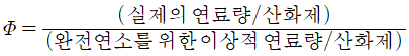
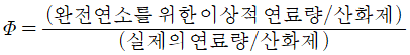
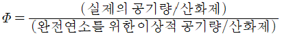
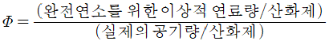
(정답률: 알수없음)
40. 체분석을 통해 다음과 같은 입도분포곡선을 얻었다. 이 토사의 유효입경은?
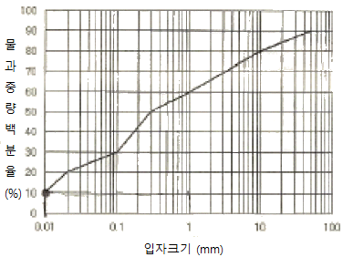
- 0.01 mm
- 0.1 mm
- 0.3 mm
- 1 mm
(정답률: 알수없음)
3과목: 폐기물 공정시험 기준(방법)
41. 용출조작에 관한 설명 중 옳지 않은 것은?
- 진탕회수는 매분당 약 200회로 한다.
- 진탕기의 진폭은 4-5cm 로 한다.
- 4시간 연속 진탕한 상등액을 적당히 취한다.
- 원심분리기 사용시는 매분당 3,000회정 이상으로 20분 이상 원리분리 한다.
(정답률: 알수없음)
42. 감동 Io 의 단색광이 정색액을 통과할 때 그 빛의 80%가 흡수되었다면 흡광도는?
- 약 0.3
- 약 0.6
- 약 0.7
- 약 0.8
(정답률: 알수없음)
43. 폐기물공정시험방법에 규정한 시료의 축소방법이 아닌 것은?
- 구획법
- 교호삼법
- 원추 4분법
- 등분법
(정답률: 알수없음)
44. 이온 전극법의 특징에 관한 내용으로 틀린 것은?
- 이온농도의 측정범위는 일반적으로 10-1mol/L ~ 10-4mol/L(또는 10-7 mol/L)이다.
- 이온전극의 종류나 구조에 따라서 사용 가능한 pH의 점위가 있기 때문에 주의하여야 한다.
- 측정용액 온도가 1.0℃ 상승하면 전위구배가 1가 이온은 약 2mV, 2가 이온은 약 1mV 변화한다.
- 시료용액의 교반은 측정에 방해되지 않는 범위 내에서 세게 일정한 속도로 하여야 한다.
(정답률: 알수없음)
45. 폐기물시료의 수분측정시험결과 다음과 같은 자료를 얻었다. 수분함량은? (단, 용기의 무게 : 50.125g, 용기와 시료의 무게 : 92.345g, 건조 후 용기와 시료의 무게(W3) : 78.125g이며 수분함량은 소수 2째자리에서 반올림한다.
- 약 23%
- 약 28%
- 약 34%
- 약 39%
(정답률: 알수없음)
46. 유기인의 가스크로마토그래프 분석에 관한 설명으로 틀린 것은?
- 칼럼 충전제는 2종 이상을 사용하여 크로마토그램을 작성한다.
- 검출기는 전자포획 검출기를 사용할 수 있다.
- 방해물질이 없는 시료일 경우는 정제조작을 생략한다.
- 헥산으로 추출한 경우 메틸디에든의 추출율을 높일 수 있다.
(정답률: 알수없음)
47. [ 반고상폐기물 시료 ( ① )g을 ( ② )ml 비이커에 취하여 증류수 ( ③ )ml을 넣어 잘 교반하여 30분 이상 방치한 다음 이 현탁액을 검액으로 하여 pH를 측정한다.] ( )안에 알맞은 내용은?
- ① 10, ② 50, ③ 25
- ① 10, ②100, ③ 50
- ① 50, ② 50, ③ 25
- ① 50, ②100, ③ 50
(정답률: 알수없음)
48. 시료의 전처리 방법인 마이크로파(Micro wave)에 의한 유기물 분해에 관한 설명 중 알맞지 않은 것은?
- 가열속도가 빠르고 재현성이 좋다
- 마이크로파는 전자파 에너지의 일종이다.
- 폐유 등 유기물이 다량 함유된 시료의 전처리에 이용된다.
- 마이크로파 주파수는 300 ~ 300,000 KHz이다.
(정답률: 알수없음)
49. 원자흡광광도법에서 정량법에 의한 검량선의 작성방법과 가장 거리가 먼 것은?
- 검량선법
- 내부표준법
- 표준첨가법
- 넓이 백분율법
(정답률: 알수없음)
50. 가스크로마토그래피법(용매추출법)으로 휘발성 저급염소화탄화수소류 측정하는데 사용되는 검출기로 가장 적합한 것은?
- ECD
- FID
- FPD
- TCD
(정답률: 알수없음)
51. "함량으로 될 때까지 건조한다.“라 함은 같은 조건에서 1시간 더 건조할 때 전후 무게의 차가 g당 몇 mg이하일 때를 말하는가?
- 0.1 mg
- 0.2 mg
- 0.3 mg
- 0.5 mg
(정답률: 알수없음)
52. 대상폐기물의 양과 시료의 최소 수 기준에 관한 기술 중 틀린 것은?
- 1톤 이상 ~ 5톤 미만 : 10개
- 30톤이상 ~ 100톤 미만 : 20개
- 500톤 이상 ~ 1000톤 미만 : 30개
- 5000톤 이상 : 60개
(정답률: 알수없음)
53. 다음 괄호에 들어갈 온도를 순서대로 적절하게 나열한 것은?
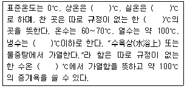
- 25 ~ 36, 1 ~ 35, 0 ~ 15, 20, 100
- 15 ~ 25, 1 ~ 35, 0 ~ 15, 15, 100
- 20 ~ 30, 1 ~ 35, 1 ~ 15, 4, 100
- 15 ~ 20, 1 ~ 36, 1 ~ 15, 4, 100
(정답률: 알수없음)
54. 유기질소화합물 및 유기인화합물을 선택적으로 검출할 수 있는 가스크로마토그래피 검출기로서 가장 적당한 것은?
- TCD
- FTD
- FPD
- ECD
(정답률: 알수없음)
55. 기름성분을 분석하기 위한 노말헥산 추출시험법에서 노말헥산을 증발시키기 위한 조작온도는?
- 50 ℃
- 60 ℃
- 70 ℃
- 80 ℃
(정답률: 알수없음)
56. 수은 표준원액(0.1mg.Hg/mℓ) 1L를 조재하기 위해 염화제이수은(순도 : 99.9%) 몇 g을 물에 녹이고 질산(1+1) 10mℓ와 물에 넣어 정확히 1L로 하여야 하는가? (단, Hg : 200.61, Cl : 35.46)
- 0.136 g
- 0.252 g
- 0.377 g
- 0.403 g
(정답률: 알수없음)
57. 흡광광도 분석장치의 배열순서 중 옳은 것은?
- 시료부 - 파장선택부 - 광원부 - 측광부
- 시료부 - 광원분 - 파장선택부 - 측광부
- 광원부 - 파장선택부 - 시료부 - 측광부
- 광원부 - 시료부 - 파장선택부 - 측광부
(정답률: 알수없음)
58. 이온전극법에 의한 시안 측정원리이다. ( )안에 알맞은 내용은?
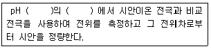
- 4이하, 산성
- 6~8, 중성
- 9~10, 알칼리성
- 12~13, 알칼리성
(정답률: 알수없음)
59. 다음은 카드뮴 측정을 위한 흡광광도법(디티존법)의 측정원리에 관한 내용이다. ( )안에 알맞은 내용은?
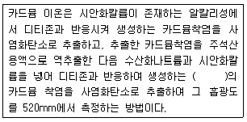
- 청색
- 남색
- 적색
- 황갈색
(정답률: 알수없음)
60. 시안(CN)을 흡광광도법을 적용하여 측정하고자 할 때 측정방법 및 흡광도 측정 색상으로 적절한 것은?
- 디티존법 : 적색
- 디페닐카르바지드법 : 적자색
- 피리딘-피라졸론법 : 청색
- 디메틸디티오카르바민산은법 : 적자색
(정답률: 알수없음)
4과목: 폐기물 관계 법규
61. 다음은 과징금에 관한 내용이다. ( )안에 알맞은 것은?
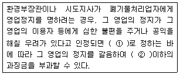
- ① 환경부령, ② 1억원
- ① 대통령령, ② 1억원
- ① 환경부령, ② 2억원
- ① 대통령령, ② 2억원
(정답률: 알수없음)
62. 시장, 군수, 구청장이 관할 구역의 폐기물처리에 관한 기본계획을 세울 때 기본계획에 포함 되어야 하는 사항과 가장 거리가 먼 것은?
- 재원의 확보 계획
- 폐기물 관리 여건 및 전망
- 폐기물의 처리 현황과 향후 처리 계획
- 폐기물의 종류별 발생량과 장래의 발생 예상량
(정답률: 알수없음)
63. 폐기물처리시설 주변지역 영향조사 기준에 관한 내용 중 조사지점에 관한 기준으로 틀린 것은?
- 미세먼지 및 다이옥신 조사지점은 해당시설에 인접한 주거지역 중 3개소 이상 지역의 일정한 곳으로 한다.
- 악취 조사지점은 매립시설에 가장 인접한 주거지역 중 냄새가 심한 2개소 이상 지역의 일정한 곳으로 한다.
- 지표수 조사지질은 해당시설에 인접하여 폐수, 침출수 등이 유입되거나 유입될 것으로 우려되는 지역의 상ㆍ하류 각 1개소 이상의 일정한 곳으로 한다.
- 토양 조사지점은 매립시설에 인접한 토양오염이 우려되는 4개소 이상의 일정한 곳으로 한다.
(정답률: 알수없음)
64. 대통령령이 정하는 폐기물처리시설을 설치 운영하는 자는 그 폐기물처리시설의 설치, 운영이 주변 지역에 미치는 영향을 몇 년마다 조사하고 그 결과를 환경부장관에게 제출하여야 하는가?
- 2년
- 3년
- 5년
- 7년
(정답률: 알수없음)
65. 폐기물처리기본계획, 폐기물관리 종합계획은 각각 몇 년마다 수립하여야 하는가?
- 1년, 3년
- 3년, 5년
- 5년, 10년
- 10년, 10년
(정답률: 알수없음)
66. [ 폐기물처리기본계획, 폐기물재활용신고자가 휴업, 폐업 또는 재개업을 한 때에는 휴업, 폐업 또는 재개업을 한 날부터 ( )이내에 신고서를 제출하여야 한다.] ( ) 안에 알맞은 내용은?
- 5일
- 7일
- 10일
- 20일
(정답률: 알수없음)
67. 시설의 폐쇄명령을 이행하지 아니한 자에 대한 벌칙기준으로 맞는 것은?
- 1년이하의 징역이나 5백만원이하의 벌금
- 2년이하의 징역이나 1천만원이하의 벌금
- 3년이하의 징역이나 2천만원이하의 벌금
- 5년이하의 징역이나 3천만원이하의 벌금
(정답률: 알수없음)
68. 다음의 폐기물처리시설 중 기계적 처리시설이 아닌 것은?
- 연료화 시설
- 고형화 시설
- 유수분리 시설
- 멸균분해시설
(정답률: 알수없음)
69. 폐기물정책의 수립에 필요한 기초자료를 확보하기위한 폐기물통계조사는 몇 년 마다 실시 하는가?
- 1년
- 2년
- 3년
- 5년
(정답률: 알수없음)
70. 폐기물관리법상 교육기관과 가장 거리가 먼 것은?
- 환경관리공단
- 국립환경과학원
- 국립환경인력개발원
- 환경보전협회
(정답률: 알수없음)
71. 폐기물처리시설 중 고온소각시설의 관리기준으로 맞는 것은?
- 연소실(연소실이 2 이상인 경우에는 최종연소실)의 출구온도는 섭씨 850도 이상을 유지하여야 한다.
- 바닥재 강열감량이 5 퍼센트 이하가 되도록 소각하여야 한다.
- 연소실은 연소가스가 2초 이상 체류하여야 한다.
- 연소실의 출구온도는 기계고장 등으로 불가피한 경우에는 기준온도보다 70도 낮은 범위 안에서 일시적으로 유지, 조치할 수 있다.
(정답률: 알수없음)
72. 폐기물처리시설의 사후관리업무를 대행할 수 있는 자는? (단, 환경부장관이 사후관리 대행할 능력이 있다고 인정하고 고시하는 자는 고려하지 않음)
- 환경보전협회
- 환경관리공단
- 폐기물처리협회
- 한국환경자원공사
(정답률: 알수없음)
73. 시도지사 또는 지방환경관서의 장이 규정에 따른 영업정지기간의 2분의 1의 범위 안에서 그 행정처분을 경감할 수 있는 경우와 가장 거리가 먼 내용은?
- 위반내용을 시도지사 또는 지방환경관서에 자진신고한 경우
- 위반의 정도가 경미하고 그로 인한 주변 환경오염이 없거나 미미하여 사람의 건강에 영향을 미치지 아니한 경우
- 고의성이 없이 불가피하게 위반행위를 한 경우로서 신속하게 적절한 사루조치를 취한 경우
- 공익을 위하여 특별히 행정처분을 경감할 필요가 있는 경우
(정답률: 알수없음)
74. 다음은 폐기물관리법에서 사용하는 용어의 정의에 관한 내용이다. 틀린 것은?
- ‘폐기물처리시설’이라 함은 폐기물의 중간처리시설과 최종처리시설로서 대통령령이 정하는 시설을 말한다.
- ‘재이용’이라 함은 폐기물로부터 환경부령이 정하는 기준에 따라 에너지이용합리화법의 규정에 의한 에너지를 회수하는 활동을 말한다.
- ‘폐기물감량화시설’이라 함은 생산공정에서 발생되는 폐기물의 양을 줄이고 사업장내 재활용을 통하여 폐기물 배출을 최소화하는 시설로서 대통령령이 정하는 시설을 말한다.
- ‘생활폐기물’이라 함은 사업장폐기물외의 폐기물을 말한다.
(정답률: 알수없음)
75. 사업장폐기물을 폐기물처리업자에게 위탁하여 처리하려는 사업장폐기물배출자는 환경장관이 고시하는 폐기물처리가격의 최저액보다 낮은 가격으로 폐기물 처리를 위탁하여서는 아니 된다. 이를 위반하여 폐기물 처리 가격의 최저액보다 낮은 가격으로 폐기물 처리를 위탁한 자에 대한 과태려 부과 기준은?
- 200만원 이하
- 300만원 이하
- 500만원 이하
- 1,000만원 이하
(정답률: 알수없음)
76. 사후관리이행보증금은 사후관리기간에 소요되는 비용을 합산하여 산출하는데 차단형 매립시설의 경우에도 해당되는 비용은?
- 매립시설에서 배출되는 가스의 처리에 소요되는 비용
- 침출수처리시설의 가동 및 유지 관리에 소요되는 비용
- 매립시설 주변의 환경오염조사에 소요되는 비용
- 매립시설제방 등의 유실방지에 소요되는 비용
(정답률: 알수없음)
77. 폐기물관리법을 적용하지 아니하는 물질로 틀린 것은?
- 용기에 들어 있지 아니한 기체상의 물질
- 수질환경보전법에 의한 오수, 분뇨 및 축산폐수
- 하수도법에 의한 하수
- 원자력법에 의한 방사성물질 및 이에 의하여 오염된 물질
(정답률: 알수없음)
78. 환경부가 정하는 다이옥신 측정기관이 아닌 것은?
- 한국환경자원공사
- 산업기술시험원
- 유역(지방)환경청
- 국립환경기술원
(정답률: 알수없음)
79. 다음은 폐기물처리업자의 준수사항에 관한 내용이다. ( ) 안에 알맞은 것은?
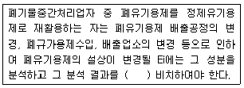
- 1년간
- 2년간
- 3년간
- 5년간
(정답률: 알수없음)
80. 음식물류 폐기물처리시설 중 혐기성 소화시설의 설치 검사시 검사항목 기준으로 틀린 것은?
- 산발효시설의 설치여부 및 작동상태
- 가열, 가온시설의 설치여부 및 작동상태
- 최종생산물의 퇴비로서의 적정성
- 메탄가스의 적정처리여부
(정답률: 알수없음)
8m3 × 5대 ÷ 2일 ÷ 500세대 ÷ 4인 = 0.02m3/인ㆍ일
쓰레기 단위 용적당 중량이 0.14g/cm3 이므로, 0.02m3의 쓰레기 중량은 다음과 같다.
0.02m3 × 1000L/m3 × 0.14g/L = 2.8kg
따라서, 1인당 1일에 배출되는 쓰레기의 중량은 다음과 같다.
2.8kg ÷ 4인 = 0.7kg/인ㆍ일
하지만, 문제에서는 쓰레기를 2일마다 수거하므로, 1인당 1일에 배출되는 쓰레기의 중량은 다음과 같다.
0.7kg/인ㆍ일 × 2일 = 1.4kg/인ㆍ일
따라서, 정답은 "1.4kg/인ㆍ일" 이다.